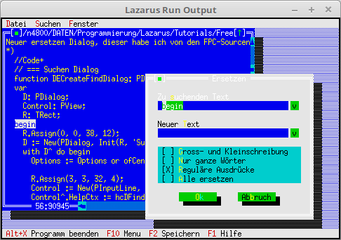

12 - Editor
10 - Suchen Ersetzen

Der Editor hat eine Suchen und Ersetzen Funktion bekommen.
Leider sind die Standard-Dialoge dafür in Englisch.
Aus diesem Grund, wird es hier neu in deutsch gebaut.
Da man leider nicht einfach die Texte ersetzen kann, so wie es bei dem FileDialog der Fall ist.
Gibt man sich mit den englischen Dialogen zu frieden, muss man für die Suchen/Ersetzen-Funktionen nur das Menü anpassen, der Rest geschieht automatisch.
Neuer ersetzen Dialog, dieser habe ich von den FPC-Sourcen übernommen und verdeutscht.
// === Suchen Dialog
function DECreateFindDialog: PDialog;
var
D: PDialog;
Control: PView;
R: TRect;
begin
R.Assign(0, 0, 38, 12);
D := New(PDialog, Init(R, 'Suchen'));
with D^ do begin
Options := Options or ofCentered;
R.Assign(3, 3, 32, 4);
Control := New(PInputLine, Init(R, 80));
Control^.HelpCtx := hcDFindText;
Insert(Control);
R.Assign(2, 2, 20, 3);
Insert(New(PLabel, Init(R, 'Zu ~s~uchenden Text', Control)));
R.Assign(32, 3, 35, 4);
Insert(New(PHistory, Init(R, PInputLine(Control), 10)));
R.Assign(3, 5, 35, 7);
Control := New(PCheckBoxes, Init(R,
NewSItem('~G~ross- und Kleinschreibung',
NewSItem('~N~ur ganze W'#148'rter', nil))));
Control^.HelpCtx := hcCCaseSensitive;
Insert(Control);
R.Assign(14, 9, 24, 11);
Control := New(PButton, Init(R, slOK, cmOk, bfDefault));
Control^.HelpCtx := hcDOk;
Insert(Control);
Inc(R.A.X, 12);
Inc(R.B.X, 12);
Control := New(PButton, Init(R, slCancel, cmCancel, bfNormal));
Control^.HelpCtx := hcDCancel;
Insert(Control);
SelectNext(False);
end;
Result := D;
end;
// === Ersetzen Dialog
function DECreateReplaceDialog: PDialog;
var
Dialog: PDialog;
Control: PView;
R: TRect;
begin
R.Assign(0, 0, 40, 16);
Dialog := New(PDialog, Init(R, 'Ersetzen'));
with Dialog^ do begin
Options := Options or ofCentered;
R.Assign(3, 3, 34, 4);
Control := New(PInputLine, Init(R, 80));
Control^.HelpCtx := hcDFindText;
Insert(Control);
R.Assign(2, 2, 20, 3);
Insert(New(PLabel, Init(R, 'Zu ~s~uchenden Text', Control)));
R.Assign(34, 3, 37, 4);
Insert(New(PHistory, Init(R, PInputLine(Control), 10)));
R.Assign(3, 6, 34, 7);
Control := New(PInputLine, Init(R, 80));
Control^.HelpCtx := hcDReplaceText;
Insert(Control);
R.Assign(2, 5, 20, 6);
Insert(New(PLabel, Init(R, 'Neuer ~T~ext', Control)));
R.Assign(34, 6, 37, 7);
Insert(New(PHistory, Init(R, PInputLine(Control), 11)));
R.Assign(3, 8, 37, 12);
Control := New(Dialogs.PCheckBoxes, Init(R,
NewSItem('~G~ross- und Kleinschreibung',
NewSItem('~N~ur ganze W'#148'rter',
NewSItem('~R~egul'#132're Ausdr'#129'cke',
NewSItem('~A~lle ersetzen', nil))))));
Control^.HelpCtx := hcCCaseSensitive;
Insert(Control);
R.Assign(8, 13, 18, 15);
Control := New(PButton, Init(R, '~O~k', cmOk, bfDefault));
Control^.HelpCtx := hcDOk;
Insert(Control);
R.Assign(22, 13, 32, 15);
Control := New(PButton, Init(R, 'Ab~b~ruch', cmCancel, bfNormal));
Control^.HelpCtx := hcDCancel;
Insert(Control);
SelectNext(False);
end;
Result := Dialog;
end;
Hier wird die neuen Dialoge eingefügt.
function MyStdEditorDialog(Dialog: Int16; Info: Pointer): word;
begin
case Dialog of
edSaveAs: begin // Neuer Dialog in Deutsch.
Result := MyApp.ExecuteDialog(New(PFileDialog, Init('*.txt',
'Datei speichern unter', '~D~atei-Name', fdOkButton, 101)), Info);
end;
edFind: // Der kommplet neue Suchen-Dialog.
Result := Application^.ExecuteDialog(DECreateFindDialog, Info);
edReplace: // Der kommplet neue Ersetzen-Dialog.
begin
Result := MyApp.ExecuteDialog(DECreateReplaceDialog, Info);
end;
else begin
Result := StdEditorDialog(Dialog, Info);
end; // Original Dialoge aufrufen.
end;
end;
Im Menü sind die neuen Suchen-Funktionen dazugekommen.
Dies ist das einzige was man machen muss.
procedure TMyApp.InitMenuBar;
var
R: TRect;
begin
GetExtent(R);
R.B.Y := R.A.Y + 1;
MenuBar := New(PMenuBar, Init(R, NewMenu(
NewSubMenu('~D~atei', hcNoContext, NewMenu(
NewItem('~N~eu', 'F4', kbF4, cmNewWin, hcNoContext,
NewItem('~O~effnen...', 'F3', kbF3, cmOpen, hcNoContext,
NewItem('~S~peichern', 'F2', kbF2, cmSave, hcNoContext,
NewItem('Speichern ~u~nter...', '', kbNoKey, cmSaveAs, hcNoContext,
NewItem('~A~lle speichern', '', kbNoKey, cmSaveAll, hcNoContext,
NewLine(
NewItem('~B~eenden', 'Alt-X', kbAltX, cmQuit, hcNoContext, nil)))))))),
NewSubMenu('~S~uchen', hcNoContext, NewMenu(
NewItem('~S~uchen...', 'Ctrl+F', kbCtrlF, cmFind, hcNoContext,
NewItem('~E~rsetzten...', 'Ctrl+H', kbCtrlH, cmReplace, hcNoContext,
NewItem('Suche ~n~'#132'chstes', 'Ctrl+N', kbCtrlN, cmSearchAgain, hcNoContext, nil)))),
NewSubMenu('~F~enster', hcNoContext, NewMenu(
NewItem('~N~ebeneinander', '', kbNoKey, cmTile, hcNoContext,
NewItem(#154'ber~l~append', '', kbNoKey, cmCascade, hcNoContext,
NewItem('~A~lle schliessen', '', kbNoKey, cmCloseAll, hcNoContext,
NewItem('Anzeige ~e~rneuern', '', kbNoKey, cmRefresh, hcNoContext,
NewLine(
NewItem('Gr'#148'sse/~P~osition', 'Ctrl+F5', kbCtrlF5, cmResize, hcNoContext,
NewItem('Ver~g~'#148'ssern', 'F5', kbF5, cmZoom, hcNoContext,
NewItem('~N~'#132'chstes', 'F6', kbF6, cmNext, hcNoContext,
NewItem('~V~orheriges', 'Shift+F6', kbShiftF6, cmPrev, hcNoContext,
NewLine(
NewItem('~S~chliessen', 'Alt+F3', kbAltF3, cmClose, hcNoContext, nil)))))))))))), nil))))));
end;